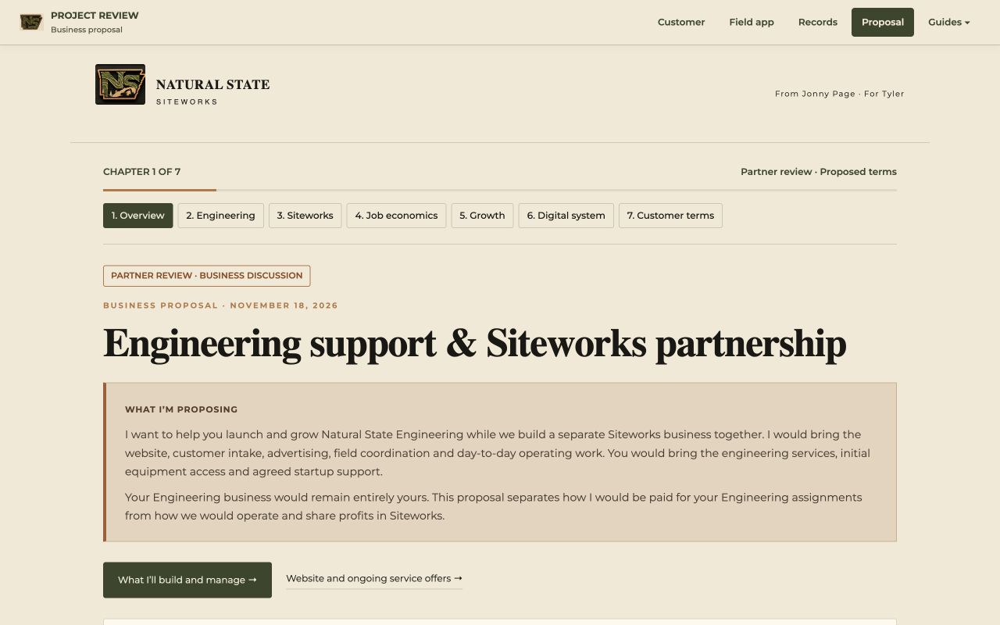

Complete system guide
My responsibilities, the architecture, retained records and what connects at launch.
Read the system guide ↗ NATURAL STATEENGINEERING
NATURAL STATEENGINEERINGThe complete project · Start here
The customer website, the field operation and my proposal—organized so you can explore each part and see how they connect.
Tyler, here is what I’ve put together for you. Start with the customer experience, follow a request into our internal app, then read the business proposal at your own pace.
The navigation at the top stays with you. Each area has its own purpose, and you can return here at any time.
Small copper-orange links explain the feature, the build plan or the related proposal.

A professional Engineering website that helps land buyers, homeowners and builders choose a service, request a visit or ask for a callback.

Installer requests, my excavation work and your engineering review stay attached to the same job. Explore the existing forms, notes, timestamps, site tools and document workflow.
The full app is here. The GIS plan is its explanation—not a replacement for the app.
Fill the example customer request and submit it. Its confirmation opens that exact property on the dispatch map and in job records. Continue using this same browser and website to keep your walkthrough together.
Fictional preview records · No customer messages or confirmed reservations are created.

I’ve separated our business discussion from the customer experience and the operating screens. Start with the overall arrangement, then work through the responsibilities, proposed compensation, Siteworks and growth plan.
Prepared for our discussion. These are proposed terms, rather than an executed agreement.
When you want the details
My responsibilities, the architecture, retained records and what connects at launch.
Read the system guide ↗Interactive map overview, public data, truck choices and customer update rules.
Explore the GIS plan ↗The intended conversation, booking and callback process, plus its operating budget.
Read the receptionist plan ↗The build scope, advertising management, service offers and separate provider costs.
Review scope and service offers ↗Look up published property context and inspect the records behind each assignment.
Property data ↗The earlier detailed walkthrough remains available. Real staff records keep their separate sign-in.
Original walkthrough chapters ↗